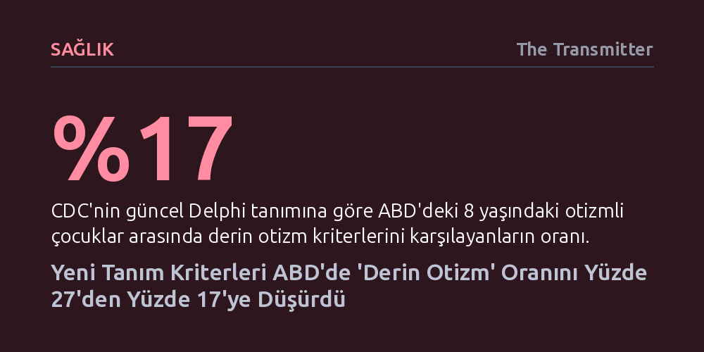

SAGLIK · The Transmitter · 2026-10-23
CDC verilerine göre, uyarlanabilir becerileri de içeren yeni tanım ve genişleyen teşhis havuzu nedeniyle ABD'de derin otizm oranı yüzde 17'ye geriledi. Bu düşüş vaka sayısının azaldığını değil, tanı kriterlerinin daha hassas ve dar hale getirildiğini gösteriyor.
Tanı kriterlerindeki ve veri toplama süreçlerindeki teknik değişikliklerin, yoğun desteğe muhtaç bireylerin istatistiksel oranlarını ve kamu sağlığı politikalarını nasıl kökten dönüştürebileceğini gösterir.

ABD Hastalık Kontrol ve Önleme Merkezleri'nin (CDC) yayımladığı güncel verilere göre, ülkedeki sekiz yaşındaki otizmli çocukların yaklaşık yüzde 17'si "derin otizm" kriterlerini karşılıyor. Bu veri, kurumun 2023 yılında açıkladığı ve oranı yüzde 27 olarak belirleyen önceki tahminle kıyaslandığında kayda değer bir düşüşe işaret ediyor.
İlk bakışta sevindirici bir gerileme gibi görünen bu tablonun arkasında biyolojik ya da tıbbi bir iyileşme yatmıyor. Araştırmacılar, bu düşüşün temel nedeninin derin otizm tanımının daha hassas ve dar kapsamlı hale getirilmesi olduğunu belirtiyor. Uzmanlara göre, oran düşmüş olsa dahi bu gruptaki çocukların ve ailelerinin aralıksız ve yoğun bakım ihtiyacı ciddiyetini korumaya devam ediyor.
Derin otizm kavramı ilk olarak 2021 yılında The Lancet Komisyonu tarafından ortaya atılmıştı. Bu tanım, yetişkinlik döneminde 24 saat kesintisiz bakıma ihtiyaç duyan, zeka katsayısı (IQ) 50'nin altında olan veya sözel iletişim becerileri son derece kısıtlı bireyleri kapsıyordu. Ancak farklı araştırma grupları bu ölçütlerin sınırları konusunda tam bir mutabakata varamamıştı.
Bu yıl 70'ten fazla araştırmacı, klinisyen ve bakım verenin katılımıyla oluşturulan Delphi konsensüsü, tanıma kritik bir unsur ekledi: Yaş düzeyinin belirgin biçimde altında seyreden uyarlanabilir işlevsellik puanları. Yeni yaklaşımda derin otizm tanısı için bireyin günlük yaşam becerilerinde ciddi yetersizlik sergilemesinin yanı sıra ya 50'nin altında IQ skoruna ya da asgari düzeyde sözel yetiye sahip olması şartı aranıyor.
Oranın yüzde 27'den yüzde 17'ye gerilemesindeki bir diğer kritik faktör ise genel otizm teşhisi alan çocuk havuzunun hızla büyümesi. Hafif ve orta düzeyde otizm belirtileri gösteren çocuklara daha fazla tanı konuldukça toplam otizmli nüfusu temsil eden payda genişliyor; bu durum, kriterleri daraltılan derin otizm grubunun genel oran içindeki payını matematiksel olarak küçültüyor.
CDC'nin Otizm ve Gelişimsel Yetersizlikleri İzleme Ağı (ADDMN) kapsamındaki 13 merkezden toplanan 2022 yılı verileri, tanı süreçlerindeki önemli bir metodolojik zayıflığı gözler önüne seriyor. İncelenen 7.084 otizmli çocuğun yalnızca yüzde 54'ünde derin otizm değerlendirmesi için gereken IQ, sözel durum ve günlük yaşam becerileri verilerinin tamamı mevcuttu.
Uzmanlar, eksik verilerin rastlantısal olmadığını ve özellikle derin otizm kategorisine girme ihtimali yüksek çocuklarda bilişsel test uygulamanın zorluğundan kaynaklandığını vurguluyor. Klinisyenlerin yoğun zaman baskısı altında çalışması nedeniyle, çocuklara hızlı tanı koyulabilse de onların gerçekte neleri yapabildiğine dair kapsamlı bir işlevsellik tablosu çıkarmak çoğu zaman ihmal ediliyor.
Bu eksiklikler ve yerel tanı yaklaşımlarındaki farklılıklar, coğrafi bölgeler arasında çarpıcı dengesizlikler doğuruyor. Derin otizm kriterlerini karşılayan çocukların oranı Utah'ta yüzde 10 seviyesinde kalırken, Teksas'ın Laredo kentinde yüzde 35'e kadar çıkıyor.
Araştırmacıların farklı tanı tanımlarını aynı veri setine uygulaması, elde edilen sonuçların seçilen ölçütlere ne kadar bağımlı olduğunu kanıtladı. Örneğin, 2021 Lancet kriterleri kullanıldığında oran yüzde 34 artarken, IQ eşiği 70'e çekildiğinde derin otizm sıklığı yüzde 71 fırlıyor. IQ tamamen dışarıda bırakılıp yalnızca sözel ve günlük yaşam becerilerine bakıldığında ise yaygınlık yüzde 33 düşüyor.
Catherine Lord'un ifade ettiği gibi, “Neyi nasıl tanımladığınıza ve hangi verilere erişebildiğinize bağlı olarak tamamen farklı oranlara ulaşırsınız.” Bu değişkenlik, kamu kaynaklarının tahsisinde ve araştırma bütçelerinin planlanmasında hangi tanımın esas alınacağı tartışmasını alevlendiriyor.
Öte yandan klinik uzmanlar, mevcut tanımların hiçbirinin meselenin özünü tam olarak yakalayamadığına dikkat çekiyor: Bir bireyin günün 24 saati yetişkin bir bakım verene bağımlı olup olmadığı. İstatistiksel tanımlar daralsa da, aralıksız desteğe ihtiyaç duyan geniş bir çocuk ve aile kitlesinin varlığı değişmeyen en somut gerçek olmaya devam ediyor.